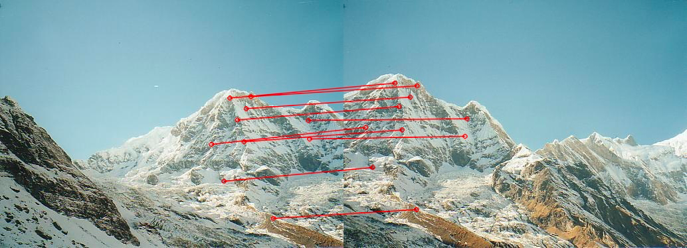

Image Features and Homography (Panaroma image stiching)
GitHubStep 1 :
Extracted SIFT features and drawn the keypoints for both images.
Step 2 :
Match the keypoints using k-nearest neighbour (k=2), i.e., for a keypoint in the left image, finding the best 2 matches in the right image. Filter good matches satisfy m.distance < 0.75 n.distance, where m is the first match and n is the second match. Draw the match image using cv2.drawMatches for all matches (match image contains both inliers and outliers).
Step 3 :
Compute the homography matrix H (with RANSAC) from the first image to the second image. Drawing 10 random matches (only inliers).

Step 3 :
Compute the homography matrix H (with RANSAC) from the first image to the second image. Drawing 10 random matches (only inliers).
Step 4 :
Warping the first image to the second image using H. The resulting image will contain all pixels in mountain1.jpg and mountain2.jpg.